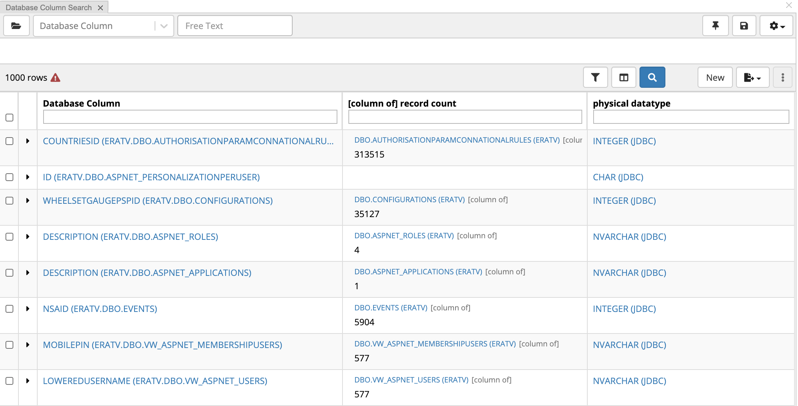

Searching in EDG is supported at across collections as well as within collections and their included collections.
Search the EDG is the feature that supports EDG-wide search.
The Search Panel that is available when viewing or editing a specific collection supports search within that collection and its included collections.
Search the EDG searches across all EDG resources that EDG administrator and/or manager of a specific collection elected to include in the index.
This decision can be made upon creation of a collection and can also be made later on the Manage tab of the collection or through Governance Model.
An entire subject area or business area can be included in Search the EDG by checking the box as shown below.
Submitting a search from the home page opens a page with the search results summary.
Your search key words will be matched against text in any of the properties of the collections that are managed by Search the EDG.
Note
You may have fields that contain text tagged with different languages, note that search will be performed across all values, irrespective of the language.
In the search results page, you can:
refine or completely change the search terms and re-execute the search,
filter results via facets,
click on any of the result results to see more information about it,
make comments about any of the found resources and see comments made by other users,
endorse any of the found resources and see endorsements made my others,
access interactive visual views and diagrams for a found resource – what is available depends on a type of the item,
All properties of the collection will be indexed for search as well as applicable facets.
The results of search are sorted by score, then alphabetically.
The facet results list shows the top 10 facets for the results.
The score is calculated based on the number of matches to the term within the document.
Lucene also offers query boosting per field (be sure to check use advanced syntax).
For example searching:
*id^3 -will find anything that ends in "id" and assign it a weight of 3, boosting those results
In addition to simply using search keywords, users can combine them with Lucene operators to form richer search queries.
By default wildcard search has been implemented before and after the search term.
For example, searching for the string “customer” without quotes actually searches for *customer*.
Check the box for Use Advanced Syntax for Lucene query expressions:
Example Lucene Operators
Wildcards (* ?): “?” performs a single character wildcard search and “*” performs a multiple character wildcard search. For example, te?t matches “test”, “text”, etc and Ken* matches all values that start with “Ken”. product -will find anything with the word “product” in it. name -will find anything that ends in “name”
Fuzzy (~): Matches similar spellings of the word. For example john~, will match “john” and “jean”. The similarity threshold is set to 0.5 by default. You can adjust it using any number between 0 and 1. For example, john~0.8.
Prohibit (-term or NOT term): excludes matches that contain the term after the “-” or “NOT” symbols. For example, Ken*-Kentucky matches all values that start with “Ken” but excludes anything that matches ‘Kentucky’.
Modifiers (AND OR): using the AND operator will match items that contain both terms while the OR operator matches an item that contains either of the terms.
Range queries: using TO operator will match items with the range of values. For example, “Finland TO Germany” in curly brackets. If you want to limit this to a particular field (for example) only a label, use <property name>:{<search query>}. For example, skos_prefLabel:{Finland TO Germany}.
The Search panel lists assets of the selected type in a sortable table.
From here, users can further filter displayed assets, export information, save searches and perform other operations.
Note
This panel is not available for ontologies, please see ontology specific documentation in Working with Ontologies.
By default, this panel will display up to 1,000 result rows by default, unless changed by your EDG Administrator.
The Type Selector shown at the top of the Search panel lets you to select the type of assets to show in the table.
You can select an asset type either from the Type drop-down list (it supports autocomplete so to select you can start typing the name of an asset type you are interested in) or you could click on the button next to the drop-down list to open a browsable hierarchical navigator listing available asset types.
Table in the Search panel shows only assets of the selected type including any of its sub types.
The Columns icon to the right of the Filter icon lets you add columns to the search results table.
Properties available for selection depend on the type of the asset.
For example, Database Column is selected as the asset type in the image below.
You will be able to select any properties defined for the Database Column asset type.
You can scroll through the list of properties available for selection or quickly find a property by typing in the Search field at the top of the dropdown.
Clicking on a property will select it as column.
Currently selected columns will be shown at the top of the drop down list.
To remove a selected column, click on the “x” icon next to it.
For properties that are relationships, you will see “>” to the right of the property name – as shown in the screenshot above.
If you click on it, EDG will present a list of properties for the related asset.
This way, you can add as columns not only properties of assets you are looking at, but also properties of related resources – these are called nested columns.
The screenshot below shows a results table that we will get after selecting as columns 1) “record count” property that belongs to related assets – namely, Database Tables that assets of the selected type, Database Columns, are associated with via “column of” property – this is an example of a nested column and 2) “physical datatype” property that belongs directly to the Database Columns.

If a column is a nested column, the header row will display the connecting relationship name in the square brackets.
Cell values for such columns will display the related assets before displaying the value of the selected property.
You can select more than one level of nesting.
The Search panel has New button.
Clicking on it, will let you create a new asset of the currently selected type.
The Search panel also offers several other actions that can be performed on the search query or on the search results.
These actions and the corresponding menus and buttons are shown in the next screenshot and explained in the text below it.
Will bring up the dialog to save searches.
Saved searches are public and can be seen and used by any other users of this collection.
To run or delete previously saved searches use the Search Library panel.
Settings menu for Search Panel.
Lets you personalize the behavior of this panel.
Hide Quick Asset Type Selector – will hide the type selector menu but leave the type selector menu in place.
Disable auto-searching – this will change the behavior of the free text search box.
You will need to hit enter when ready to submit instead of the results auto populating as you type.
Add a column for each filter – checking this box will add a column to the results table each time you add a property as a filter for the search.
Return local results only – this will filter out included collections.
More. Provides access to several actions that can be performed on selected results.
Check the row boxes for the items you want to perform these actions on.
Delete
Add to Asset List – which is another panel in the editor used for bulk functions or bookmarks
Add to Basket – which is the basket for all of EDG located in the left navigation menu
Edit assets – will launch a Batch Edit wizard tool
Show on Map Results Panel – this option will be available only if Map Explorer Panel is enabled.
Clicking on it will display selected items on the map – provided that they have geo coordinates.
You can search among the assets of selected type by using:
Free text (any property). This matches your string against any property with textual values e.g., label, description, note, etc.
This query is wildcard.
For example, searching for “rock” will be interpreted as rock and return results for “rocket”.
Multiple word free text searches will be AND not OR.
A B means an implicit AND
“A B” matches the full term (in exactly that order)
A OR B means an ‘or’ – infinite chains are supported such as A OR B OR C OR D
TopBraid EDG Searching for Assets using Free Text
Filter on specific property values.
The filter icon will open a drop down listing available properties and letting you select one or more.
This works similar to Columns drop down, including ability to select properties of related assets.
For each property selected using Filters drop down, you will be able to enter a search criteria and specify the type of match.
Type of match determines how EDG will use the value you enter in that field to search for matching data.
Different properties can use different match types.
Search criteria specified for each property are combined together to produce an overall search result.
Refine field is displayed at the top of each column under the column name.
Entering a value in this field refines the results displayed in the table.
The Refine is similar to Filter except that it only affects the visibility of assets that are already in the results table, without affecting which assets are loaded into results table, i.e., the underlying search scope is unchanged and refine only narrows data already in the table.
If you have incomplete search results, over 1000 if you have the default settings, you can still search the entire collection as well as export all the search results:
A Global Lookup text box In the page header lets you find assets (resources) across all asset collections in EDG by entering their name.
This is an auto-complete look up field.
As you type, any resource whose label is prefixed by the search text will appear in a popup list.
Label and Preferred label with a language tag in the current browser’s language or with no language tag will be matched against the entered string.
Selecting a listed resource displays form with its information in a new browser tab – in the context of the collection where it is defined.
Lucene integration and special character handling in Search
EDG uses the Apache Lucene library for indexing text.
A text index is built on system startup, if it does not already exist.
The indexer is using Graph Listeners and is updated in near real time as data changes.
Users with administrator privileges can rebuild the cache on demand using the Cached Graphs administration page (see EDG Administration and Configuration).
By default, both Search the EDG and the EDG editor search panel use the Lucene index StandardAnalyzer.
The default StandardAnalyzerdrops characters such as / and – while the WhitespaceAnalyzer preserves them.
To search over special characters (such as / ? and -), an administrator must enable the WhitespaceAnalyzer option in EDG Configuration Parameters.
After making a change in analyzer, the administrator needs to rebuild the indices using Text Indices and Search the EDG Index.